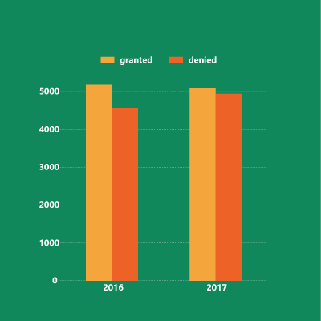
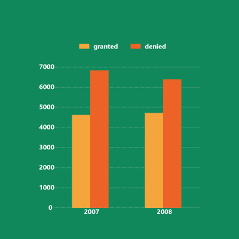
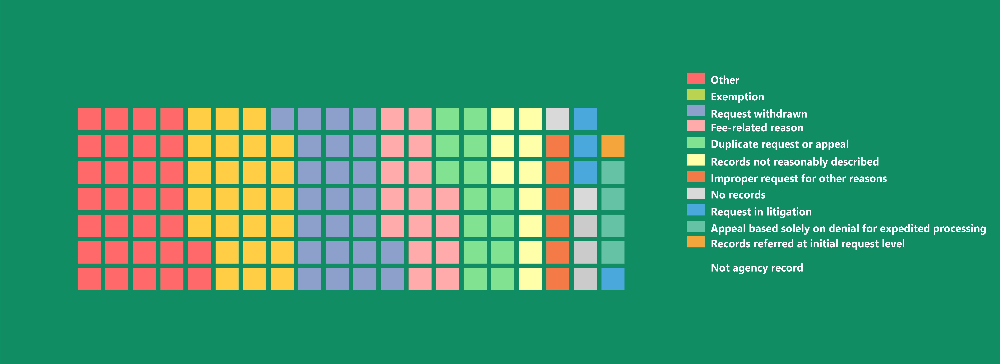
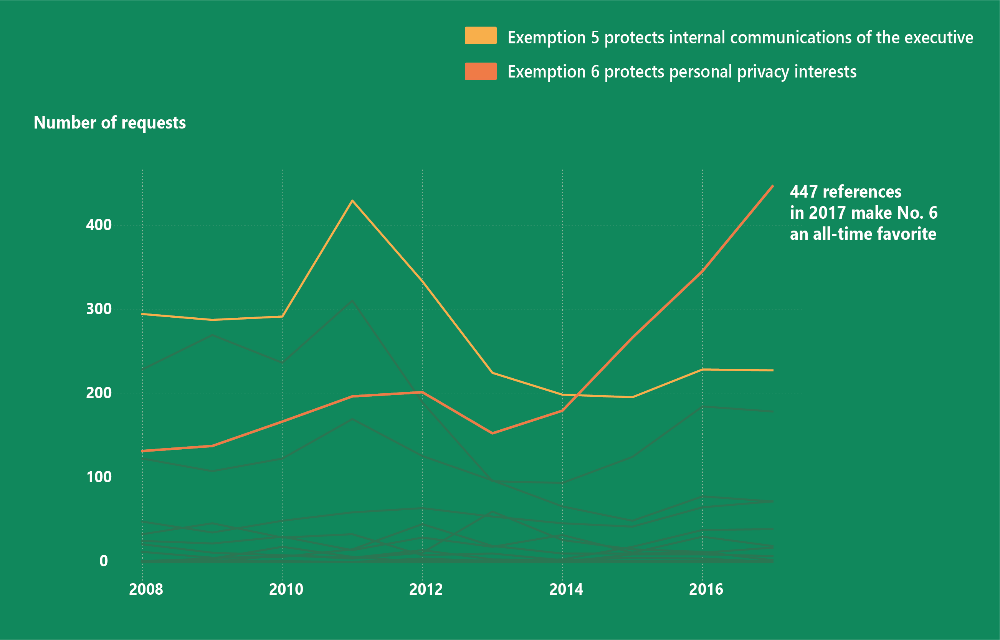

Freedom of Information
BY Catharina Felke
Published July 27, 2018
Access to information is a fundamental right. A lot of governments deny their citizens this right, though, and the United States are no exception. To see whether the handling of information requests worsened under Trump I analyzed the FOIA reports from the Environmental Protection Agency (EPA). The Obama Administration was already opaque when it came to freedom of information requests, turns out (and you might have already guessed this):
Thing's did not improve.
Opacity stages a comeback
In 2017 almost one out of two FOIA requests was denied.
Denials, denials, denials
The EPA rejected even more requests in the mid-2000's than now.
SOURCES: EPA, FOIA reports (left and right);
Nothing to see here
The data shows that the EPA denied more FOIA requests (in relative and absolute numbers) during Barack Obama's first year as a president than in the previous year under President Donald Trump. Compared to 2016 the EPA catches up, though.
By far the most given reason for withhelding information from citizens is the claim that there are actually 'no documents' in connection with the request. The EPA issued the 'no records' argument 2739 times in 2017. This accounts for almost a third of all processed requests.
Whenever a request is denied one can appeal to a federal agency asking it to review the decsion at a higher administrative level. Those appeals can take some time, they take a lot of time at the EPA. In 2017 it took the agency an average number of 228 days to respond to an administrative appeal. 228 days are more than seven months. Imagine you request a review in January and receive a reply (which can be a denial, of course) during summer eating ice-cream. You think that's bad? The EPA's oldest pending appeal dates back to 2010 (it was issued in summer, by the way).
204 appeals were processed in 2017
The majority gets denied, exemptions and withdrawn appeals or requests are common reasons.
SOURCE: EPA, FOIA reports
Although most of FOIA denials are apparently related to a lack of data, exemptions play an important role in the processing of information requests. There are 14 exemptions in total, including various sub-exemptions. Those protect national security and foreign relations, trade secrets and the geological information of wells. But the most prominent one to refer to when denying access to information used to be another one: Exemption 5.
It protects inter-agency or intra-agency communications with legal privileges. The use of No. 5 peaked in 2011, and is falling since then. By early 2014 the former favorite was outrun by Exemption 6 which protects personal privacy interest, and keeps being in demand. By fall 2017 it was the most cited exemption since the EPA started publishing FOIA reports in 2007.
The one time personal privacy matters
Looking at all 14 exemptions the EPA has a new clear favorite for denying FOIA requests.
SOURCE: EPA, FOIA reports
tl;dr: Freedom of information is important. Use the FOIA, get the data.